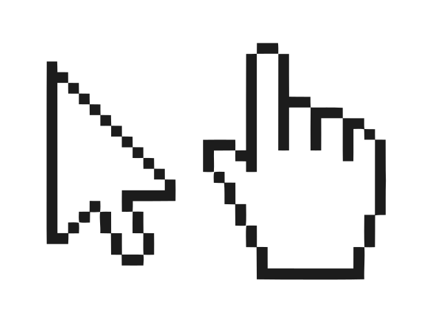

Physics
Home
Academia
Physics
Mathematics
Computer Science
Theology
Personal
Posts
RSS
Books
About Me
GitHub
Links
Quantum Computing
IBM Quantum Compting QISKIT
Halting Problem for Quantum Computers
A free introduction to quantum computing and quantum mechanics
Quantum Computing since Democritus
PHYS 711
Physics 229: Quantum Computation
Biophysics
Cell Paint
Coarse-Grain Modeling for DNA Structures
oxDNA: Main Page
oxDNA viewer (Petr Sulc)
oxDNA Configuration File Information
arXiv: The oxDNA coarse-grained model as a tool to simulate DNA origami
arXiv: Sequence-dependent Thermodynamics of a Coarse-Grained DNA Model
bioXiv: Design, optimization, and analysis of large DNA and RNA nanostructures through interactive visualization, editing, and molecular simulation
Science: Programming DNA Tube Circumfrences
Talk: In-silico design, visualization, and analysis of large DNA and RNA nanostructures
Video: Render photo-realistic images of oxDNA structures using Blender
Video: Nanofabrication via DNA Origami
Lab Website: Bioman Labs
Lab Website: Petr Sulc
CXFEL
CXFEL Homepage
Video: About CXFEL
William Graves' ASU Profile
QCD
arXiv: Introductuion to Lattice QCD
arXiv: Machine learning action parameters in lattice quantum chromodynamics
Fluid Dynamics
arXiv: Convolutional Neural Networks - Fluid Dynamics
Simulations
Introduction to molecular simulation